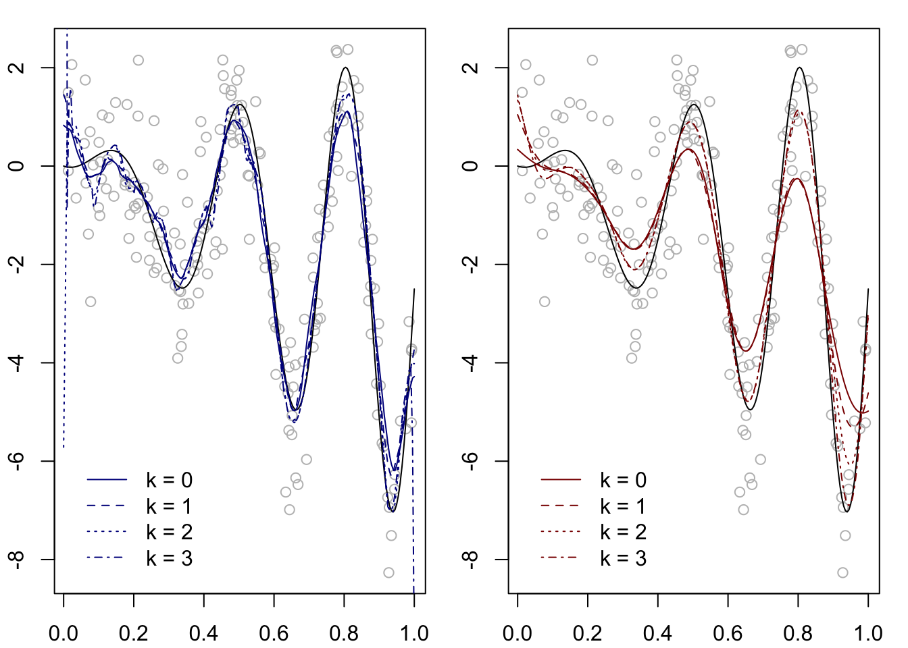

The Nadaraya-Watson estimator is well suited to regression functions \(m\) belonging to a Lipschitz class. However, if \(m\) belongs to a Hölder class, which we may think of as a “smoother” class of functions, an estimator called a local polynomial estimator may achieve better accuracy (in the form of a smaller bound on the \(\operatorname{MSE}\)).
The idea behind the local polynomial estimator is, first, to assume that the function \(m\) to be estimated possesses \(k\) continuous derivatives, such that for each \(x\) one may write the order-\(k\) Taylor expansion of \(m\) around \(x\) evaluated at \(x'\) as \[
m_k(x';x) = m(x) + \sum_{l=1}^{k}\frac{1}{l!}m^{(l)}(x)(x'-x)^l,
\] and, second, re-writing the expansion as \[
m_k(x';x) = a_0(x) + a_1(x)(x' - x) + \dots + a_k(x)(x' - x)^k,
\] where \[
a_0(x) = m(x),\quad a_l(x) = \frac{1}{l!}m^{(l)}(x),\quad l = 1,\dots,k,
\] to estimate these coefficients by minimizing the criterion \[
\sum_{i=1}^n \Big[Y_i - \Big(t_0 + \sum_{l=1}^kt_l\Big(\frac{x_i - x}{h}\Big)^l\Big)\Big]^2K\Big(\frac{x_i - x}{h}\Big)
\tag{10.1}\] over \(t_0,t_1,\dots,t_k\). Denoting the minimizers of the above as \(\hat a_0(x),\hat a_1(x),\dots,\hat a_k(x)\), one lastly defines the order \(k\) local polynomial estimator of \(m(x)\) as \[
\hat m_{n,h}^{\operatorname{LP}(k)}(x) = \hat a_0(x).
\]
The strategy is therefore to approximate \(m(x)\) with a polynomial function of order \(k\) and then to estimate its coefficients using data “local” to the point \(x\), where a kernel \(K\) and bandwidth \(h\) are selected to place higher weight on data pairs for which \(x_i\) is nearer the point \(x\). Afterwards, one discards the coefficients belonging to higher order terms, keeping only the estimate of the coefficient representing the actual target of estimation, \(a_0(x) = m(x)\).
In order to compute the local polynomial estimator, one may define for each \(x\) the \(n \times (k+1)\) matrix \[
\mathbf{U}_x = \Big[ \Big(\frac{x_i - x}{h}\Big)^l\Big]_{1 \leq i \leq n, 0 \leq l \leq k}
\] as well as the diagonal matrix \[
\mathbf{K}_x = \operatorname{diag}\Big(K\Big(\frac{x_i - x}{h}\Big), i = 1,\dots,n\Big)
\] and the vector \(\mathbf{Y}= (Y_1,\dots,Y_n)^T\). Then \(\hat m_{n,h}^{\operatorname{LP}(k)}(x)\) may be obtained as the first entry of the \((k+1)\times 1\) vector \[
\hat{\mathbf{a}}_x = (\mathbf{U}_x^T\mathbf{K}_x\mathbf{U}_x)^{-1} \mathbf{U}_x^T\mathbf{K}_x\mathbf{Y}.
\tag{10.2}\] The above can be seen after re-writing the minimand in Equation 10.1 in matrix form in terms of \(\mathbf{U}_x\), \(\mathbf{K}_x\), and \(\mathbf{Y}\).
Lemma 10.1 (Local polynomial estimator as a linear estimator) Noting that \(\mathbf{U}_x = \mathbf{1}\) in the case \(k=0\) and partitioning \(\mathbf{U}_x\) as \(\mathbf{U}_x = [\mathbf{1}~ \tilde{\mathbf{U}}_x]\) in the case \(k \geq 1\), where \(\tilde{\mathbf{U}}_x = [((x_i - x)/h)^l]_{1 \leq i \leq n, 1 \leq l \leq k}\), define the vector
\[
\mathbf{r}_x = \left\{\begin{array}{ll}
\mathbf{k}_x, & k = 0\\
\mathbf{k}_x - \mathbf{K}_x \tilde{\mathbf{U}}_x(\tilde{\mathbf{U}}_x^T\mathbf{K}_x\tilde{\mathbf{U}}_x)^{-1}\tilde{\mathbf{U}}_x\mathbf{k}_x, & k \geq 1,\end{array}\right.
\] where \(\mathbf{k}_x\) is the \(n\times 1\) vector with entries \(K((x_i - x)/h)\), \(i = 1,\dots,n\). Then \[
\hat m_{n,h}^{\operatorname{LP}(k)}(x) = \frac{\mathbf{r}_x^T\mathbf{Y}}{\mathbf{r}_x^T\mathbf{1}} = \sum_{i=1}^n W_{ni}(x)Y_i,
\] where, for each \(i=1,\dots,n\), the weight \(W_{ni}(x)\) is given by entry \(i\) of the vector \((\mathbf{r}_x^T\mathbf{1})^{-1}\mathbf{r}_x\).
A similar representation of the local polynomial estimator is found in Xia and Li (2002).
The case \(k=0\) corresponds to the Nadaraya-Watson estimator. For \(k \geq 1\), write \[
\mathbf{U}^T_x \mathbf{K}_x \mathbf{U}_x = \left[\begin{array}{cc}
\mathbf{1}^T\mathbf{K}_n \mathbf{1}& \mathbf{1}^T\mathbf{K}_x\tilde{\mathbf{U}}_x\\
\tilde{\mathbf{U}}_x\mathbf{K}_x \mathbf{1}& \tilde{\mathbf{U}}^T\mathbf{K}_x\tilde{\mathbf{U}}_x
\end{array}\right]
\] and use a block inversion formula to take the inverse \((\mathbf{U}^T_x \mathbf{K}_x \mathbf{U}_x)^{-1}\). The result follows from writing \[
\hat m_{n,h}^{\operatorname{LP}(k)}(x) = \mathbf{e}_1^T(\mathbf{U}_x^T\mathbf{K}_x\mathbf{U}_x)^{-1} \mathbf{U}_x^T\mathbf{K}_x\mathbf{Y},
\] following Equation 10.2, where \(\mathbf{e}_1\) is the \((k+1)\times 1\) unit vector with the first entry equal to \(1\).
Note that if \(k=0\), the local polynomial estimator reduces to the Nadaraya-Watson estimator, which can be formulated as \[
\hat m_{n,h}^\operatorname{NW}(x) = \underset{t_0}{\operatorname{argmin}} \sum_{i=1}^n(Y_i - t_0)^2K\Big(\frac{x_i - x}{h}\Big).
\]
Figure 10.1 shows the local polynomial estimator computed on a synthetic data set under two choices of the kernel and with \(k=0,1,2\), where the \(k=0\) estimator corresponds to the Nadaraya-Watson estimator. For this data set we note that with order \(k=2\) or \(k=3\) the local polynomial estimator appears to do a better job reaching the peaks and valleys of the function than with order \(k=0\) or \(k=1\). We observe, however, that the local polynomial estimator can exhibit some erratic behavior at the boundary of the interval over which \(x_1,\dots,x_n\) are observed.
Code
# set the random seed so that we get a data set which causes erratic boundary behaviorset.seed(1)# Epanechnikov kernelepker <-function(x){3/4*(1- x^2) *((x <=1) & (x >=-1)) }# LP estimatormLP <-function(x,data,K,h,k){ kx <-K((data$X - x)/h)if(k ==0){ Wx <- kx /sum(kx) } elseif(k >0){ Ux <-outer((data$X - x)/h,c(1:k),FUN ="^") rx <- kx - kx*Ux %*%solve(t(kx*Ux) %*% Ux) %*%t(Ux) %*% kx Wx <- rx /sum(rx) } mLPx <-sum(Wx*data$Y)return(mLPx)}# true function mm <-function(x) 5*x*sin(2*pi*(1+ x)^2) - (5/2)*x# generate datan <-200X <-runif(n)e <-rnorm(n)Y <-m(X) + edata <-list(X = X,Y = Y)# plot LP estimator at two choices of kernel and three choices of the order kpar(mfrow =c(1,2), mar=c(2.1,2.1,1.1,1.1))x <-seq(0,1,length=200)h <-0.05kk <-c(0,1,2,3)KK <-list(epker, dnorm)cols <-c(rgb(0,0,.545,1),rgb(0.545,0,0,1))for(l in1:2){plot(Y~X, col ="gray")lines(m(x)~x)for(j in1:length(kk)){ mLPx <-sapply(x,FUN=mLP,data=data,K=KK[[l]],h=h,k=kk[j])lines(mLPx~x,col=cols[l],lty=j) }legend(x =grconvertX(from="nfc", to="user", 0.15),y =grconvertY(from="nfc", to="user", 0.3),lty =c(1:length(kk)),col = cols[l],legend =c(paste("k = ",kk,sep="")),bty ="n")}

Figure 10.1: Local polynomial estimator of order \(k=0,1,2\) on a synthetic data set with Epanechnikov (left) and Gaussian (right) kernel under a fixed bandwidth.
We next present a bound on the \(\operatorname{MSE}\) of the local polynomial estimator when the true regression function lies in a Hölder class.
Xia, Yingcun, and Wai Keung Li. 2002. “Asymptotic Behavior of Bandwidth Selected by the Cross-Validation Method for Local Polynomial Fitting.”Journal of Multivariate Analysis 83 (2): 265–87.